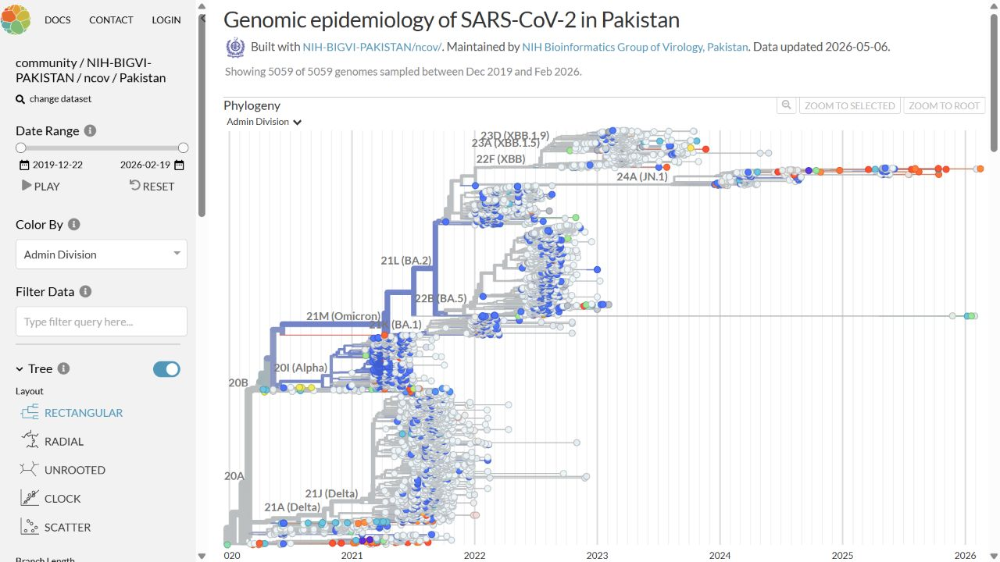

How can poliovirus surveillance move closer to direct detection?
Culture-free nanopore sequencing, whole-capsid analysis, and evidence-aware reporting for environmental surveillance.
M.Phil. · Genomics since 2015
Research Scientist in the Department of Virology, National Institute of Health, Islamabad, Pakistan. I connect laboratory sequencing, reproducible bioinformatics, and genomic surveillance to turn clinical, environmental, and wastewater samples into evidence that public-health teams can use.
Maintaining Pakistan SARS-CoV-2 Nextstrain Community Build ↗

Current research & future direction
My interests sit where laboratory practice, genomic inference, and deployable public-health systems meet.
Culture-free nanopore sequencing, whole-capsid analysis, and evidence-aware reporting for environmental surveillance.
Quality-controlled interpretation of minor variants, mixed populations, antigenic sites, and transmission context.
Reproducible pipelines, public-safe data, traceable reports, SOPs, and training designed for resource-limited settings.
Relationships, clearly labelled
Experience & education
The trajectory moves from clinical sequencing and variant interpretation to national viral surveillance and poliovirus research.
Work in the Regional Reference Laboratory for Polio spans environmental-surveillance sequencing, DDNS/ONT analysis, whole-capsid workflows, interpretation, and reproducible reporting.
Contributed to national viral genomic surveillance, outbreak response, pathogen pipelines, phylogenetics, dashboards, and staff mentoring.
Clinical whole-exome sequencing, targeted panels, variant interpretation, clinician-facing reporting, QC, and laboratory operations.
Selected research contributions
Author position, study question, method, and primary evidence help reviewers understand the contribution—not just count papers.
Journal of Virological Methods 326, 115213
A first-author study using metagenomic next-generation sequencing and whole-genome analysis to characterize CV-A24v during the 2022 outbreak in Islamabad.
RSV whole-genome analysis with outbreak and mutation context.
↗ 2024 · Co-first author · Dengue Serotype and genomic diversity of dengue virus during the 2023 outbreak in PakistanDENV-1 and DENV-2 genomic diversity and phylogenetic interpretation.
↗ 2024 · Co-first author · SARS-CoV-2 Genomic epidemiology and phylogeography during and after Pakistan’s sixth waveVariant dynamics placed in temporal and geographic context.
↗ 2026 · Collaborative output · Respiratory surveillance Influenza, SARS-CoV-2, and RSV surveillance in Islamabad and RawalpindiA recent multi-pathogen genomics contribution.
↗Selected workflows & maintained public resources
A public ONT MinION workflow for reviewing barcode folders, benchmarking VP1 reference hits, assessing coverage evidence, attempting consensus, and producing an auditable HTML report.

I maintain the reproducible analysis and publishing workflow behind the NIH Bioinformatics Group of Virology’s Pakistan-focused SARS-CoV-2 Nextstrain Community build. It combines quality control, time-resolved phylogenetic analysis, and an interactive public view for transparent genomic-surveillance communication.
Consensus, antigenic-site review, coverage, and phylogeny for post-culture Illumina data.
A reproducible R template for exploratory movement analysis using public-safe synthetic data.
The work, end to end
One connected workflow across laboratory practice, computation, quality review, and communication.
Research notes
What I bring
My work spans molecular and virology workflows, Illumina and Oxford Nanopore sequencing, reproducible bioinformatics, quality systems, public-database submission, technical reporting, and staff development.


Training & scientific engagement
Selected teaching, specialist training, and technical exchange across Pakistan, the United Kingdom, Malaysia, and Singapore—with each role, date, and provider labelled clearly.
Connect